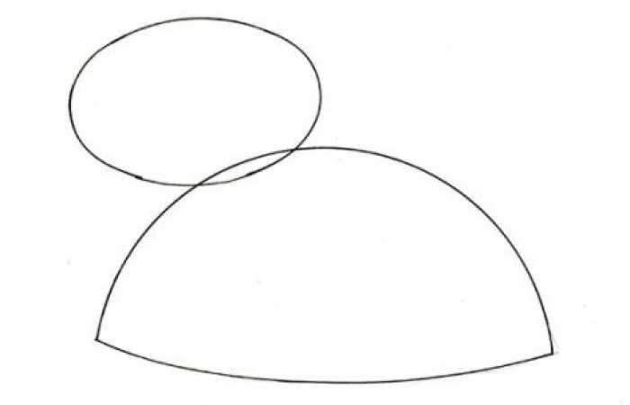
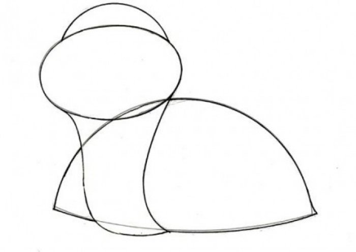
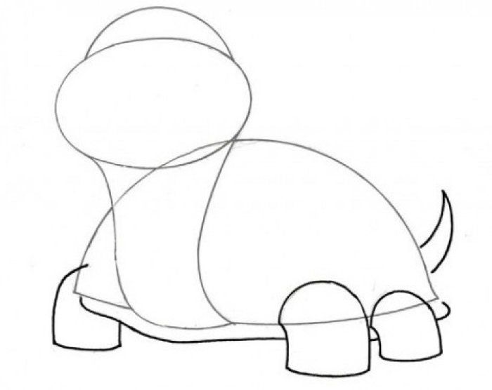
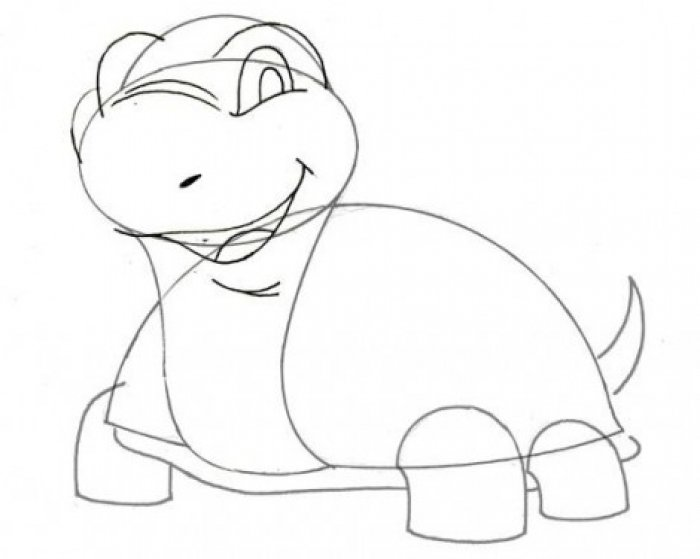
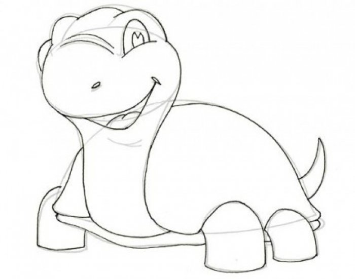
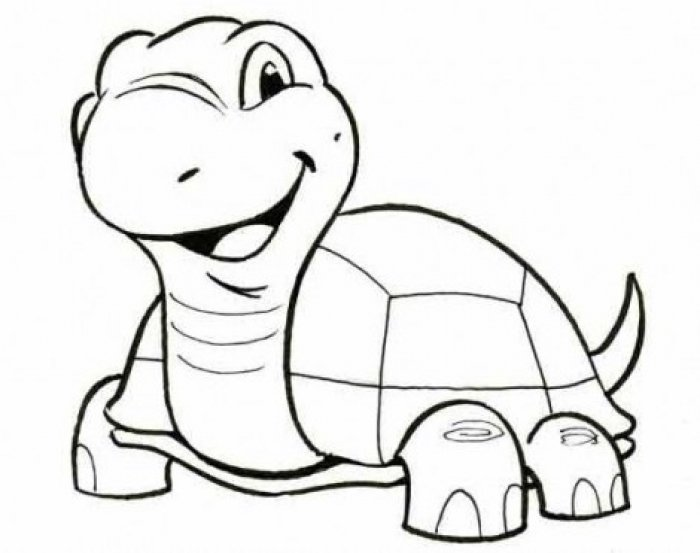

Урок малювання черепахи
Крок 1. Спочатку намалюй невеликий овал — це голова черепахи. Нижче накресли панцир у вигляді фігури, що нагадує півколо.
Крок 2. Тепер потрібно об'єднати голову і панцир черепахи, вивівши з однієї точки дві вигнуті лінії. Зверху домалюй фігуру — півколо.
Крок 3. Намалюй три ноги (четверту ми не бачимо). Під панциром проведи лінію — це тіло тваринки. І ще одна важлива деталь — маленький гострий хвостик.
Крок 4. А зараз найскладніше — намалювати очі черепахи, точніше лише одне око, бо інше не видно. Над очима потрібно додати складки, а біля лівого ока — ще й куточок щічки. За допомогою двох довгих вигнутих ліній намалюй носик. Ближче до нижнього краю постав крапочку, а ще нижче намалюй широку усмішку. А щоб наш малюнок черепахи виглядав більш реалістично, потрібно додати кілька складок на шию.
Крок 5. Наближаємося до фінішу — зітри зайві лінії та наведи контури.
Крок 6. Наведи контури та розфарбуй!
Це цікаво! Чи знаєш Ти, що черепахи можуть жити понад 100 років? Про вік можна дізнатися, якщо порахувати кільця на щитках, із яких складається панцир черепахи. А ще ці тваринки вміють запам'ятовувати обличчя людей. Вони витягують шию, якщо промовляти до них ласкаві слова, а якщо говорити грубо — ховаються в панцир.